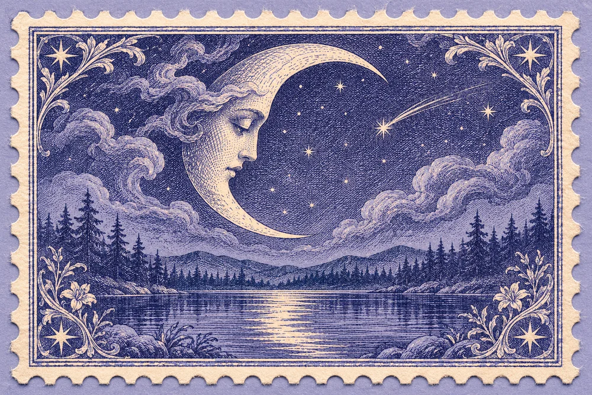

One Clear Night
$12 USD
Have a particular night in mind? Give us your lookout, the date you’ve circled, and what you hope to see when you both look up. We’ll address your wish to the sky above that spot.
Inside your letter
The story takes you from setting out together to finding your place in the dark. We weave in something you’re bringing along and write a wish you can take turns reading by the last light of your phone.
- Full-length personal letter & printable PDF
- Illustrated wish card for your phone
- Digital delivery within 48 hours
Dear clouds above Pine Ridge, would you leave a little gap above the bend in the trail? My brother is bringing the dented thermos. I’m bringing the blanket. We’re hoping to catch one shooting star together.
Example reviews
Illustrative examples for this page design. These comments and ratings are fictional, not customer feedback.
A letter for our lookout
The place we chose felt like part of the story. We read it before setting out with the blanket and flask.
The moon illustration won me over
The stamp has such lovely engraved detail. The printed wish card is now tucked in our travel journal.
A small ritual for two
Taking turns reading the wish made the evening feel considered, even before we looked up at the sky.
Personal without being overdone
The reference to our familiar trail was subtle. It gave the letter a sense of place without overwhelming it.
Worth saving
I liked having both the full letter and a short closing wish. They work well for different moments.